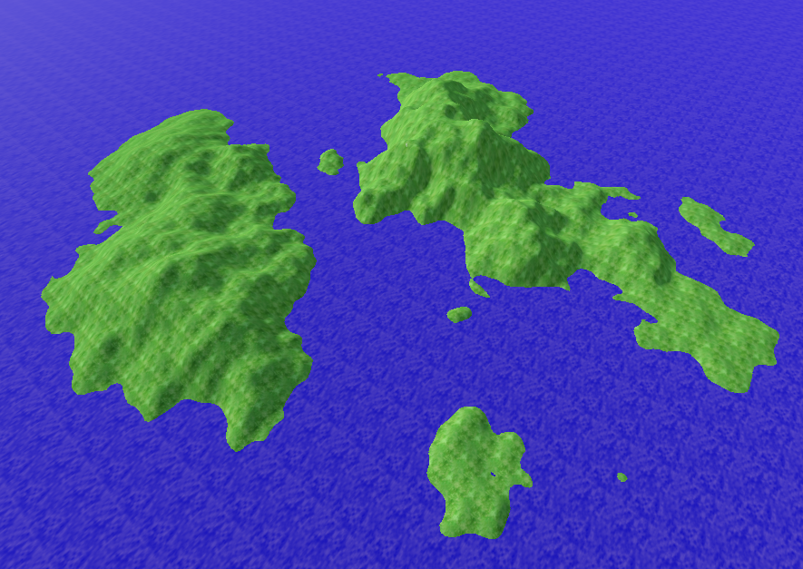
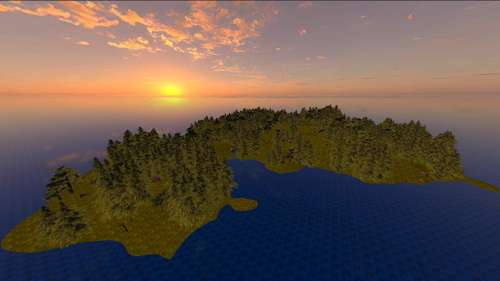
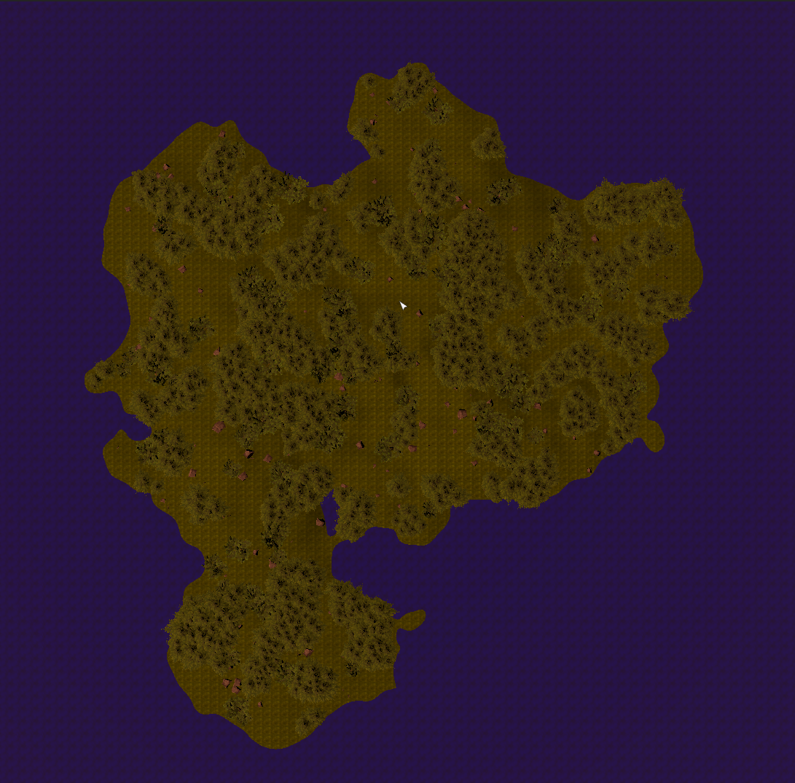
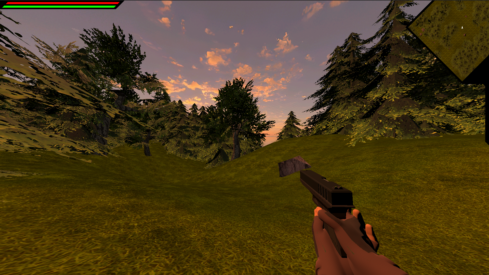
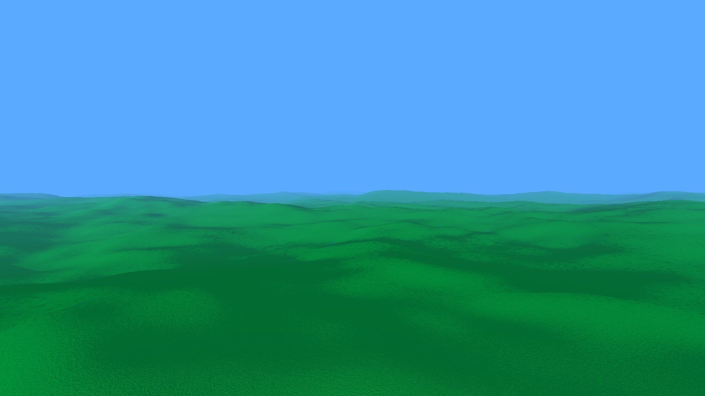
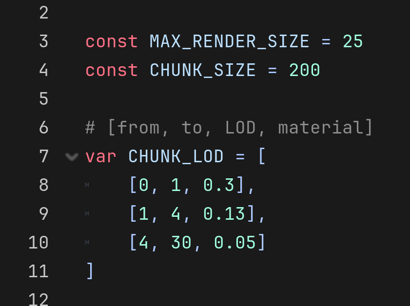
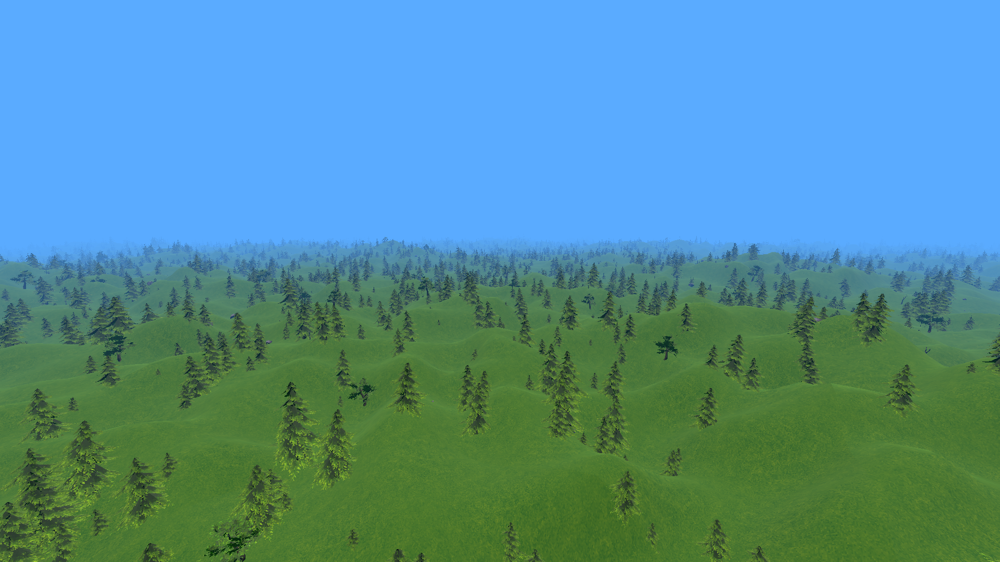

3D TERRAIN
With these projects, I learned to work with 3D tools.

FPS TEST
This is the first time, that I dipped my toes in 3D. The terrain is basically a flat mesh, vertically offset with a heightmap (either noise or a picture). Even added some crude foliage implementation.

I also experimented with an orthographic camera for an overhead map view.

Also also... I experimented with a somewhat complex movement physics with acceleration, that made the character control feel natural, dynamic and fun.

CHUNK & LOD TEST
This project is most important to me, as for the technical side of things. Here I learned, how to properly utilize chunks and custom LODs enabling me to render huge distances with reasonable framerates.


